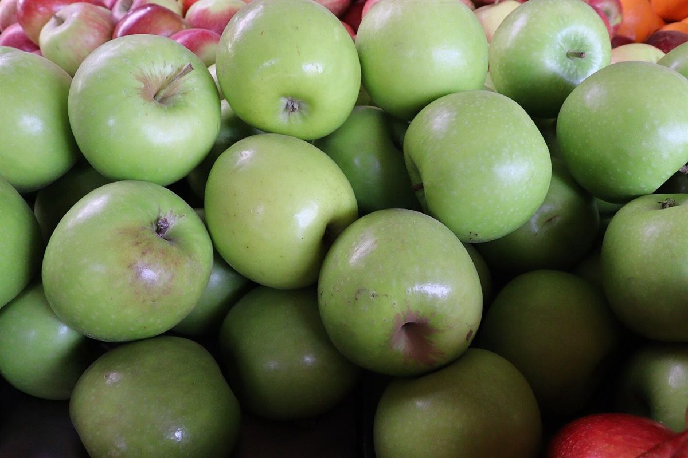

32mm
店のこと
店のこと
お店について確認できているのは、所在地・電話・Instagramのアカウントだけです。
このページの「想像してみる」部分は、制作側が想像して書いたものです。お店の実際の様子・考え・メニューとは関係がありません。
確認できていること
- 25mm
店名と業種
店名は「ニコカフェ」、業種はカフェです。
- 32mm
所在地
〒762-0022 香川県坂出市加茂町甲５４２。
- 44mm
電話
電話番号は 0877-35-8307 です。
- 57mm
Instagram
アカウントは @nico_cafe2026 です。
- 75mm
準備中のこと
営業時間・定休日・メニュー・価格・ご予約・駐車場は準備中です。
想像してみる
「ニコ」という名前から
由来は分かりません。制作側は、にこっと笑える時間に寄り添うお店かもしれない、と想像しました。あくまで制作側の想像で、実際のお店の姿ではありません。
